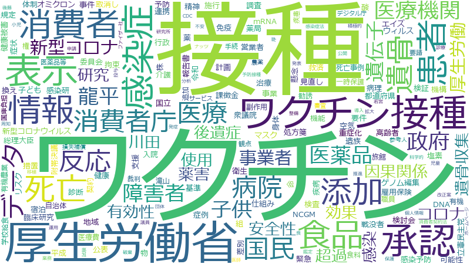

川田龍平

ワクチン 、厚生労働省 、接種 、情報 、感染症 、承認 、国民 、政府 、ワクチン接種 、消費者 、表示 、データ 、患者 、支援 、事業者 、食品 、効果 、医療 、調査 、コロナ 、子供 、死亡 、使用 、規定 、措置 、事業 、病院 、地域 、研究 、新型コロナ 、医療機関 、反応 、安全性 、障害者 、消費者庁 、緊急 、新型コロナウイルス 、体制 、委員会 、令和 、計画 、健康 、連携 、感染 、医薬品 、公表 、厚生労働 、平成 、事件 、要件 、懸念 、検証 、総理大臣 、報告書 、観点 、機能 、精神 、仕組み 、可能性 、有効性 、リスク 、契約 、検査 、超過 、添加 、見直し 、基準 、因果関係 、整備 、治療 、行政 、施行 、衆議院 、遺骨 、物 、職員 、都道府県 、症状 、自治体 、推進 、団体 、導入 、遺伝子 、予防 、手続 、機構 、ウィルス 、子ども 、差別 、後遺症 、拡大 、立憲民主党 、運用 、要請 、課題 、業務 、積極的 、追加 、高齢者 、サービス
ワクチン 、接種 、厚生労働省 、ワクチン接種 、承認 、表示 、感染症 、消費者 、患者 、食品 、情報 、死亡 、添加 、遺骨 、消費者庁 、反応 、国民 、医療 、データ 、病院 、医療機関 、政府 、医薬品 、障害者 、遺伝子 、子供 、龍平 、新型コロナ 、厚生労働 、事業者 、因果関係 、コロナ 、安全性 、超過 、効果 、後遺症 、有効性 、使用 、遺骨収集 、川田 、研究 、薬害 、感染 、新型コロナウイルス 、支援 、調査 、緊急 、規定 、換え 、症状 、精神 、事件 、ゲノム編集 、塩素 、NCGM 、健康 、治療 、営業者 、措置 、感染研 、事業 、宿泊 、エイズ 、DNA 、立憲民主党 、拘束 、地域 、薬局 、身体 、戦没者 、検査 、雇用保険 、検証 、疾病 、国立 、要件 、報告書 、差別 、マスク 、症例 、委員会 、契約 、空気 、病理 、組 、ウィルス 、予防 、遺族 、mRNA 、計画 、衆議院 、体制 、総理大臣 、公表 、課徴金 、酸 、懸念 、救済 、機構 、検討会
ワクチン
| 言及回数 | 432回 |
| 言及発言者数（参考人を含む） | 438人 |
接種
| 言及回数 | 370回 |
| 言及発言者数（参考人を含む） | 320人 |
厚生労働省
| 言及回数 | 402回 |
| 言及発言者数（参考人を含む） | 792人 |
ワクチン接種
| 言及回数 | 197回 |
| 言及発言者数（参考人を含む） | 359人 |
承認
| 言及回数 | 222回 |
| 言及発言者数（参考人を含む） | 531人 |
表示
| 言及回数 | 179回 |
| 言及発言者数（参考人を含む） | 369人 |
感染症
| 言及回数 | 240回 |
| 言及発言者数（参考人を含む） | 817人 |
消費者
| 言及回数 | 185回 |
| 言及発言者数（参考人を含む） | 589人 |
患者
| 言及回数 | 161回 |
| 言及発言者数（参考人を含む） | 422人 |
食品
| 言及回数 | 146回 |
| 言及発言者数（参考人を含む） | 361人 |
情報
| 言及回数 | 279回 |
| 言及発言者数（参考人を含む） | 1374人 |
死亡
| 言及回数 | 134回 |
| 言及発言者数（参考人を含む） | 352人 |
添加
| 言及回数 | 71回 |
| 言及発言者数（参考人を含む） | 39人 |
遺骨
| 言及回数 | 66回 |
| 言及発言者数（参考人を含む） | 48人 |
消費者庁
| 言及回数 | 99回 |
| 言及発言者数（参考人を含む） | 237人 |
反応
| 言及回数 | 109回 |
| 言及発言者数（参考人を含む） | 338人 |
国民
| 言及回数 | 212回 |
| 言及発言者数（参考人を含む） | 1366人 |
医療
| 言及回数 | 144回 |
| 言及発言者数（参考人を含む） | 770人 |
データ
| 言及回数 | 166回 |
| 言及発言者数（参考人を含む） | 1014人 |
病院
| 言及回数 | 119回 |
| 言及発言者数（参考人を含む） | 514人 |
医療機関
| 言及回数 | 110回 |
| 言及発言者数（参考人を含む） | 440人 |
政府
| 言及回数 | 203回 |
| 言及発言者数（参考人を含む） | 1432人 |
医薬品
| 言及回数 | 83回 |
| 言及発言者数（参考人を含む） | 225人 |
障害者
| 言及回数 | 102回 |
| 言及発言者数（参考人を含む） | 416人 |
遺伝子
| 言及回数 | 61回 |
| 言及発言者数（参考人を含む） | 83人 |
子供
| 言及回数 | 134回 |
| 言及発言者数（参考人を含む） | 839人 |
龍平
| 言及回数 | 48回 |
| 言及発言者数（参考人を含む） | 30人 |
新型コロナ
| 言及回数 | 113回 |
| 言及発言者数（参考人を含む） | 653人 |
厚生労働
| 言及回数 | 81回 |
| 言及発言者数（参考人を含む） | 280人 |
事業者
| 言及回数 | 146回 |
| 言及発言者数（参考人を含む） | 1086人 |
因果関係
| 言及回数 | 67回 |
| 言及発言者数（参考人を含む） | 160人 |
コロナ
| 言及回数 | 134回 |
| 言及発言者数（参考人を含む） | 977人 |
安全性
| 言及回数 | 105回 |
| 言及発言者数（参考人を含む） | 603人 |
超過
| 言及回数 | 72回 |
| 言及発言者数（参考人を含む） | 219人 |
効果
| 言及回数 | 144回 |
| 言及発言者数（参考人を含む） | 1138人 |
後遺症
| 言及回数 | 58回 |
| 言及発言者数（参考人を含む） | 107人 |
有効性
| 言及回数 | 74回 |
| 言及発言者数（参考人を含む） | 274人 |
使用
| 言及回数 | 128回 |
| 言及発言者数（参考人を含む） | 986人 |
遺骨収集
| 言及回数 | 43回 |
| 言及発言者数（参考人を含む） | 32人 |
川田
| 言及回数 | 48回 |
| 言及発言者数（参考人を含む） | 59人 |
研究
| 言及回数 | 116回 |
| 言及発言者数（参考人を含む） | 905人 |
薬害
| 言及回数 | 39回 |
| 言及発言者数（参考人を含む） | 26人 |
感染
| 言及回数 | 85回 |
| 言及発言者数（参考人を含む） | 498人 |
新型コロナウイルス
| 言及回数 | 94回 |
| 言及発言者数（参考人を含む） | 659人 |
支援
| 言及回数 | 155回 |
| 言及発言者数（参考人を含む） | 1542人 |
調査
| 言及回数 | 135回 |
| 言及発言者数（参考人を含む） | 1332人 |
緊急
| 言及回数 | 98回 |
| 言及発言者数（参考人を含む） | 788人 |
規定
| 言及回数 | 125回 |
| 言及発言者数（参考人を含む） | 1210人 |
換え
| 言及回数 | 43回 |
| 言及発言者数（参考人を含む） | 64人 |
症状
| 言及回数 | 63回 |
| 言及発言者数（参考人を含む） | 272人 |
精神
| 言及回数 | 75回 |
| 言及発言者数（参考人を含む） | 455人 |
事件
| 言及回数 | 80回 |
| 言及発言者数（参考人を含む） | 548人 |
ゲノム編集
| 言及回数 | 38回 |
| 言及発言者数（参考人を含む） | 43人 |
塩素
| 言及回数 | 28回 |
| 言及発言者数（参考人を含む） | 8人 |
NCGM
| 言及回数 | 30回 |
| 言及発言者数（参考人を含む） | 13人 |
健康
| 言及回数 | 87回 |
| 言及発言者数（参考人を含む） | 705人 |
治療
| 言及回数 | 67回 |
| 言及発言者数（参考人を含む） | 381人 |
営業者
| 言及回数 | 39回 |
| 言及発言者数（参考人を含む） | 57人 |
措置
| 言及回数 | 123回 |
| 言及発言者数（参考人を含む） | 1325人 |
感染研
| 言及回数 | 40回 |
| 言及発言者数（参考人を含む） | 66人 |
事業
| 言及回数 | 122回 |
| 言及発言者数（参考人を含む） | 1357人 |
宿泊
| 言及回数 | 53回 |
| 言及発言者数（参考人を含む） | 224人 |
エイズ
| 言及回数 | 32回 |
| 言及発言者数（参考人を含む） | 27人 |
DNA
| 言及回数 | 39回 |
| 言及発言者数（参考人を含む） | 71人 |
立憲民主党
| 言及回数 | 58回 |
| 言及発言者数（参考人を含む） | 303人 |
拘束
| 言及回数 | 52回 |
| 言及発言者数（参考人を含む） | 223人 |
地域
| 言及回数 | 118回 |
| 言及発言者数（参考人を含む） | 1422人 |
薬局
| 言及回数 | 43回 |
| 言及発言者数（参考人を含む） | 128人 |
身体
| 言及回数 | 53回 |
| 言及発言者数（参考人を含む） | 285人 |
戦没者
| 言及回数 | 33回 |
| 言及発言者数（参考人を含む） | 52人 |
検査
| 言及回数 | 72回 |
| 言及発言者数（参考人を含む） | 667人 |
雇用保険
| 言及回数 | 40回 |
| 言及発言者数（参考人を含む） | 121人 |
検証
| 言及回数 | 79回 |
| 言及発言者数（参考人を含む） | 809人 |
疾病
| 言及回数 | 46回 |
| 言及発言者数（参考人を含む） | 202人 |
国立
| 言及回数 | 52回 |
| 言及発言者数（参考人を含む） | 298人 |
要件
| 言及回数 | 80回 |
| 言及発言者数（参考人を含む） | 851人 |
報告書
| 言及回数 | 76回 |
| 言及発言者数（参考人を含む） | 778人 |
差別
| 言及回数 | 58回 |
| 言及発言者数（参考人を含む） | 422人 |
マスク
| 言及回数 | 50回 |
| 言及発言者数（参考人を含む） | 294人 |
症例
| 言及回数 | 34回 |
| 言及発言者数（参考人を含む） | 74人 |
委員会
| 言及回数 | 92回 |
| 言及発言者数（参考人を含む） | 1147人 |
契約
| 言及回数 | 72回 |
| 言及発言者数（参考人を含む） | 749人 |
空気
| 言及回数 | 41回 |
| 言及発言者数（参考人を含む） | 163人 |
病理
| 言及回数 | 27回 |
| 言及発言者数（参考人を含む） | 26人 |
組
| 言及回数 | 43回 |
| 言及発言者数（参考人を含む） | 194人 |
ウィルス
| 言及回数 | 59回 |
| 言及発言者数（参考人を含む） | 485人 |
予防
| 言及回数 | 60回 |
| 言及発言者数（参考人を含む） | 508人 |
遺族
| 言及回数 | 46回 |
| 言及発言者数（参考人を含む） | 244人 |
mRNA
| 言及回数 | 21回 |
| 言及発言者数（参考人を含む） | 6人 |
計画
| 言及回数 | 90回 |
| 言及発言者数（参考人を含む） | 1150人 |
衆議院
| 言及回数 | 66回 |
| 言及発言者数（参考人を含む） | 653人 |
体制
| 言及回数 | 93回 |
| 言及発言者数（参考人を含む） | 1243人 |
総理大臣
| 言及回数 | 78回 |
| 言及発言者数（参考人を含む） | 947人 |
公表
| 言及回数 | 82回 |
| 言及発言者数（参考人を含む） | 1034人 |
課徴金
| 言及回数 | 28回 |
| 言及発言者数（参考人を含む） | 39人 |
酸
| 言及回数 | 28回 |
| 言及発言者数（参考人を含む） | 39人 |
懸念
| 言及回数 | 79回 |
| 言及発言者数（参考人を含む） | 992人 |
救済
| 言及回数 | 52回 |
| 言及発言者数（参考人を含む） | 424人 |
機構
| 言及回数 | 60回 |
| 言及発言者数（参考人を含む） | 600人 |
検討会
| 言及回数 | 54回 |
| 言及発言者数（参考人を含む） | 473人 |
ワクチン
| 言及回数 | 432回 |
| 言及発言者数（参考人を含む） | 438人 |
厚生労働省
| 言及回数 | 402回 |
| 言及発言者数（参考人を含む） | 792人 |
接種
| 言及回数 | 370回 |
| 言及発言者数（参考人を含む） | 320人 |
情報
| 言及回数 | 279回 |
| 言及発言者数（参考人を含む） | 1374人 |
感染症
| 言及回数 | 240回 |
| 言及発言者数（参考人を含む） | 817人 |
承認
| 言及回数 | 222回 |
| 言及発言者数（参考人を含む） | 531人 |
国民
| 言及回数 | 212回 |
| 言及発言者数（参考人を含む） | 1366人 |
政府
| 言及回数 | 203回 |
| 言及発言者数（参考人を含む） | 1432人 |
ワクチン接種
| 言及回数 | 197回 |
| 言及発言者数（参考人を含む） | 359人 |
消費者
| 言及回数 | 185回 |
| 言及発言者数（参考人を含む） | 589人 |
表示
| 言及回数 | 179回 |
| 言及発言者数（参考人を含む） | 369人 |
データ
| 言及回数 | 166回 |
| 言及発言者数（参考人を含む） | 1014人 |
患者
| 言及回数 | 161回 |
| 言及発言者数（参考人を含む） | 422人 |
支援
| 言及回数 | 155回 |
| 言及発言者数（参考人を含む） | 1542人 |
事業者
| 言及回数 | 146回 |
| 言及発言者数（参考人を含む） | 1086人 |
食品
| 言及回数 | 146回 |
| 言及発言者数（参考人を含む） | 361人 |
効果
| 言及回数 | 144回 |
| 言及発言者数（参考人を含む） | 1138人 |
医療
| 言及回数 | 144回 |
| 言及発言者数（参考人を含む） | 770人 |
調査
| 言及回数 | 135回 |
| 言及発言者数（参考人を含む） | 1332人 |
コロナ
| 言及回数 | 134回 |
| 言及発言者数（参考人を含む） | 977人 |
子供
| 言及回数 | 134回 |
| 言及発言者数（参考人を含む） | 839人 |
死亡
| 言及回数 | 134回 |
| 言及発言者数（参考人を含む） | 352人 |
使用
| 言及回数 | 128回 |
| 言及発言者数（参考人を含む） | 986人 |
規定
| 言及回数 | 125回 |
| 言及発言者数（参考人を含む） | 1210人 |
措置
| 言及回数 | 123回 |
| 言及発言者数（参考人を含む） | 1325人 |
事業
| 言及回数 | 122回 |
| 言及発言者数（参考人を含む） | 1357人 |
病院
| 言及回数 | 119回 |
| 言及発言者数（参考人を含む） | 514人 |
地域
| 言及回数 | 118回 |
| 言及発言者数（参考人を含む） | 1422人 |
研究
| 言及回数 | 116回 |
| 言及発言者数（参考人を含む） | 905人 |
新型コロナ
| 言及回数 | 113回 |
| 言及発言者数（参考人を含む） | 653人 |
医療機関
| 言及回数 | 110回 |
| 言及発言者数（参考人を含む） | 440人 |
反応
| 言及回数 | 109回 |
| 言及発言者数（参考人を含む） | 338人 |
安全性
| 言及回数 | 105回 |
| 言及発言者数（参考人を含む） | 603人 |
障害者
| 言及回数 | 102回 |
| 言及発言者数（参考人を含む） | 416人 |
消費者庁
| 言及回数 | 99回 |
| 言及発言者数（参考人を含む） | 237人 |
緊急
| 言及回数 | 98回 |
| 言及発言者数（参考人を含む） | 788人 |
新型コロナウイルス
| 言及回数 | 94回 |
| 言及発言者数（参考人を含む） | 659人 |
体制
| 言及回数 | 93回 |
| 言及発言者数（参考人を含む） | 1243人 |
委員会
| 言及回数 | 92回 |
| 言及発言者数（参考人を含む） | 1147人 |
令和
| 言及回数 | 91回 |
| 言及発言者数（参考人を含む） | 1398人 |
計画
| 言及回数 | 90回 |
| 言及発言者数（参考人を含む） | 1150人 |
健康
| 言及回数 | 87回 |
| 言及発言者数（参考人を含む） | 705人 |
連携
| 言及回数 | 86回 |
| 言及発言者数（参考人を含む） | 1460人 |
感染
| 言及回数 | 85回 |
| 言及発言者数（参考人を含む） | 498人 |
医薬品
| 言及回数 | 83回 |
| 言及発言者数（参考人を含む） | 225人 |
公表
| 言及回数 | 82回 |
| 言及発言者数（参考人を含む） | 1034人 |
厚生労働
| 言及回数 | 81回 |
| 言及発言者数（参考人を含む） | 280人 |
平成
| 言及回数 | 81回 |
| 言及発言者数（参考人を含む） | 1121人 |
事件
| 言及回数 | 80回 |
| 言及発言者数（参考人を含む） | 548人 |
要件
| 言及回数 | 80回 |
| 言及発言者数（参考人を含む） | 851人 |
懸念
| 言及回数 | 79回 |
| 言及発言者数（参考人を含む） | 992人 |
検証
| 言及回数 | 79回 |
| 言及発言者数（参考人を含む） | 809人 |
総理大臣
| 言及回数 | 78回 |
| 言及発言者数（参考人を含む） | 947人 |
報告書
| 言及回数 | 76回 |
| 言及発言者数（参考人を含む） | 778人 |
観点
| 言及回数 | 76回 |
| 言及発言者数（参考人を含む） | 1477人 |
機能
| 言及回数 | 75回 |
| 言及発言者数（参考人を含む） | 1169人 |
精神
| 言及回数 | 75回 |
| 言及発言者数（参考人を含む） | 455人 |
仕組み
| 言及回数 | 74回 |
| 言及発言者数（参考人を含む） | 1121人 |
可能性
| 言及回数 | 74回 |
| 言及発言者数（参考人を含む） | 1203人 |
有効性
| 言及回数 | 74回 |
| 言及発言者数（参考人を含む） | 274人 |
リスク
| 言及回数 | 72回 |
| 言及発言者数（参考人を含む） | 925人 |
契約
| 言及回数 | 72回 |
| 言及発言者数（参考人を含む） | 749人 |
検査
| 言及回数 | 72回 |
| 言及発言者数（参考人を含む） | 667人 |
超過
| 言及回数 | 72回 |
| 言及発言者数（参考人を含む） | 219人 |
添加
| 言及回数 | 71回 |
| 言及発言者数（参考人を含む） | 39人 |
見直し
| 言及回数 | 70回 |
| 言及発言者数（参考人を含む） | 1061人 |
基準
| 言及回数 | 69回 |
| 言及発言者数（参考人を含む） | 1076人 |
因果関係
| 言及回数 | 67回 |
| 言及発言者数（参考人を含む） | 160人 |
整備
| 言及回数 | 67回 |
| 言及発言者数（参考人を含む） | 1413人 |
治療
| 言及回数 | 67回 |
| 言及発言者数（参考人を含む） | 381人 |
行政
| 言及回数 | 67回 |
| 言及発言者数（参考人を含む） | 1025人 |
施行
| 言及回数 | 66回 |
| 言及発言者数（参考人を含む） | 783人 |
衆議院
| 言及回数 | 66回 |
| 言及発言者数（参考人を含む） | 653人 |
遺骨
| 言及回数 | 66回 |
| 言及発言者数（参考人を含む） | 48人 |
物
| 言及回数 | 65回 |
| 言及発言者数（参考人を含む） | 751人 |
職員
| 言及回数 | 65回 |
| 言及発言者数（参考人を含む） | 1008人 |
都道府県
| 言及回数 | 65回 |
| 言及発言者数（参考人を含む） | 879人 |
症状
| 言及回数 | 63回 |
| 言及発言者数（参考人を含む） | 272人 |
自治体
| 言及回数 | 63回 |
| 言及発言者数（参考人を含む） | 1052人 |
推進
| 言及回数 | 62回 |
| 言及発言者数（参考人を含む） | 1339人 |
団体
| 言及回数 | 61回 |
| 言及発言者数（参考人を含む） | 1158人 |
導入
| 言及回数 | 61回 |
| 言及発言者数（参考人を含む） | 1168人 |
遺伝子
| 言及回数 | 61回 |
| 言及発言者数（参考人を含む） | 83人 |
予防
| 言及回数 | 60回 |
| 言及発言者数（参考人を含む） | 508人 |
手続
| 言及回数 | 60回 |
| 言及発言者数（参考人を含む） | 1034人 |
機構
| 言及回数 | 60回 |
| 言及発言者数（参考人を含む） | 600人 |
ウィルス
| 言及回数 | 59回 |
| 言及発言者数（参考人を含む） | 485人 |
子ども
| 言及回数 | 58回 |
| 言及発言者数（参考人を含む） | 716人 |
差別
| 言及回数 | 58回 |
| 言及発言者数（参考人を含む） | 422人 |
後遺症
| 言及回数 | 58回 |
| 言及発言者数（参考人を含む） | 107人 |
拡大
| 言及回数 | 58回 |
| 言及発言者数（参考人を含む） | 1183人 |
立憲民主党
| 言及回数 | 58回 |
| 言及発言者数（参考人を含む） | 303人 |
運用
| 言及回数 | 58回 |
| 言及発言者数（参考人を含む） | 1139人 |
要請
| 言及回数 | 57回 |
| 言及発言者数（参考人を含む） | 941人 |
課題
| 言及回数 | 57回 |
| 言及発言者数（参考人を含む） | 1478人 |
業務
| 言及回数 | 56回 |
| 言及発言者数（参考人を含む） | 1038人 |
積極的
| 言及回数 | 56回 |
| 言及発言者数（参考人を含む） | 1109人 |
追加
| 言及回数 | 56回 |
| 言及発言者数（参考人を含む） | 806人 |
高齢者
| 言及回数 | 55回 |
| 言及発言者数（参考人を含む） | 611人 |
サービス
| 言及回数 | 54回 |
| 言及発言者数（参考人を含む） | 862人 |